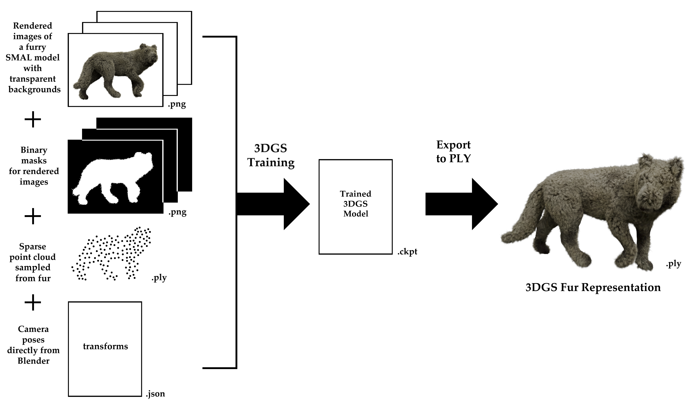

Thesis Information
- Title: Hybrid Representation for Neural and Parametric 3D Animal Model
- Author: Paulína Jančárová
- Supervisor: Mgr. Martin Halaj
- Consultant: doc. RNDr. Martin Madaras, PhD.
- University: Comenius University in Bratislava
- Faculty: Faculty of Mathematics, Physics and Informatics
- Study Programme: Computer Science (Bachelor's Programme)
- Field of Study: Computer Science
- Department: Department of Applied Informatics
- Year: 2026
Abstract
In recent years, neural scene representations have emerged
as powerful tools for reconstructing complex 3D scenes.
Methods such as Neural Radiance Fields and 3D
Gaussian Splatting have proven effective at capturing fine details
that are difficult to
model manually, such as those present in foliage, fabric, hair, and fur.
Despite their
visual quality, neural representations generally lack
an underlying structure that would
allow for easy manipulation and animation. In contrast,
parametric 3D models provide
a controllable, editable representation through
a predefined topology and parameter
space, but they struggle to represent fine details.
This bachelor’s thesis explores the
combination of these two approaches through
the creation of a hybrid neural-parametric
animal model. A parametric animal mesh is augmented
with fur represented using 3D
Gaussian Splatting trained on synthetically created fur data.
Experiments with a simple binding method
that associates the learned 3D Gaussian representation with the
parametric animal mesh show that the fur is able to follow
transformations of the
parametric model, including changes in position,
orientation, scale, pose, and shape.
Rendering performance of the neurally created fur
is compared with the original fur
model used to generate the training data,
demonstrating the potential of the proposed
representation for real-time rendering applications.
Keywords: parametric 3D models, SMAL, 3D Gaussian Splatting,
hybrid representations, hybrid neural-parametric 3D models, fur modeling
Results
- Imported a SMAL model into Blender.
- Added fur to the SMAL model using Blender’s built-in Curves Fur system.
- Set up camera keyframes to capture the model from multiple angles.
- Rendered the keyframed camera sequence.
- Used a Python script to extract camera positions from Blender.
- Created a fur-only mesh with a significantly reduced fur count, then generated a point cloud from it using a Python script.
- Trained Nerfstudio's Splatfacto model using rendered images of the model, camera positions, and the fur point cloud as input data.
- Exported the trained 3DGS scene as a PLY file.

- Aligned the 3DGS fur representation with the corresponding SMAL model mesh.
- Bound the 3DGS fur representation to the SMAL model mesh:
- For each Gaussian primitive, the closest point on the mesh was calculated.
- The position of each Gaussian primitive relative to the closest mesh face was saved in an NPZ file. This included the face ID, barycentric coordinates of the closest point, offset of the Gaussian center along the face normal, and rotation relative to the face.
- The stored binding information was used to transfer the fur representation to a different SMAL model:
- The corresponding faces on the modified mesh were identified using the saved face ID.
- The Gaussian centers were reconstructed using the stored barycentric coordinates and offsets from the mesh surface.
- The Gaussian rotations were updated according to the local coordinate systems of the modified mesh faces.
- The Gaussian scales were adjusted based on the local changes in triangle areas between the source and target meshes.
- The Gaussian primitives with updated positions, rotations, and scales were saved in a new 3DGS PLY file.
Thesis Defense Presentation
Full Thesis
Bibliography
- Blender Foundation. Blender, 2025.
- Xiangjun Gao, Xiaoyu Li, Yiyu Zhuang, Qi Zhang, Wenbo Hu, Chaopeng Zhang, Yao Yao, Ying Shan, and Long Quan. Mani-gs: Gaussian splatting manipulation with triangular mesh. arXiv preprint arXiv:2405.17811, 2024.
- Bernhard Kerbl, Georgios Kopanas, Thomas Leimkühler, and George Drettakis. 3d gaussian splatting for real-time radiance field rendering. ACM Transactions on Graphics, 42(4), July 2023.
- KIRI Innovations. 3dgs render for blender. https://www.kiriengine.app/3d-tools/3dgs-render, 2025. Accessed: 2026-05-31.
- Matthew Loper, Naureen Mahmood, Javier Romero, Gerard Pons-Moll, and Michael J. Black. SMPL: A skinned multi-person linear model. ACM Trans. Graphics (Proc. SIGGRAPH Asia), 34(6):248:1–248:16, October 2015.
- Ben Mildenhall, Pratul P. Srinivasan, Matthew Tancik, Jonathan T. Barron, Ravi Ramamoorthi, and Ren Ng. Nerf: Representing scenes as neural radiance fields for view synthesis. In ECCV, 2020.
- Zhijing Shao, Zhaolong Wang, Zhuang Li, Duotun Wang, Xiangru Lin, Yu Zhang, Mingming Fan, and Zeyu Wang. SplattingAvatar: Realistic Real-Time Human Avatars with Mesh-Embedded Gaussian Splatting. In Proceedings of the IEEE/CVF Conference on Computer Vision and Pattern Recognition (CVPR), 2024.
- Matthew Tancik, Ethan Weber, Evonne Ng, Ruilong Li, Brent Yi, Justin Kerr, Terrance Wang, Alexander Kristoffersen, Jake Austin, Kamyar Salahi, Abhik Ahuja, David McAllister, and Angjoo Kanazawa. Nerfstudio: A modular framework for neural radiance field development. In ACM SIGGRAPH 2023 Conference Proceedings, SIGGRAPH ’23, 2023.
- Joanna Waczyńska, Piotr Borycki, Sławomir Tadeja, Jacek Tabor, and Przemysław Spurek. Games: Mesh-based adapting and modification of gaussian splatting. 2024.
- Guanjun Wu, Taoran Yi, Jiemin Fang, Lingxi Xie, Xiaopeng Zhang, Wei Wei, Wenyu Liu, Qi Tian, and Xinggang Wang. 4d gaussian splatting for real-time dynamic scene rendering. In Proceedings of the IEEE/CVF Conference on Computer Vision and Pattern Recognition (CVPR), pages 20310–20320, June 2024.
- Tianhan Xu, Yasuhiro Fujita, and Eiichi Matsumoto. Surface-aligned neural radiance fields for controllable 3d human synthesis, 2022.
- Silvia Zuffi, Angjoo Kanazawa, David Jacobs, and Michael J. Black. 3D menagerie: Modeling the 3D shape and pose of animals. In IEEE Conf. on Computer Vision and Pattern Recognition (CVPR), July 2017.
Contact
- Personal Email: paulinajancarova@gmail.com
- University Email: jancarova9@uniba.sk